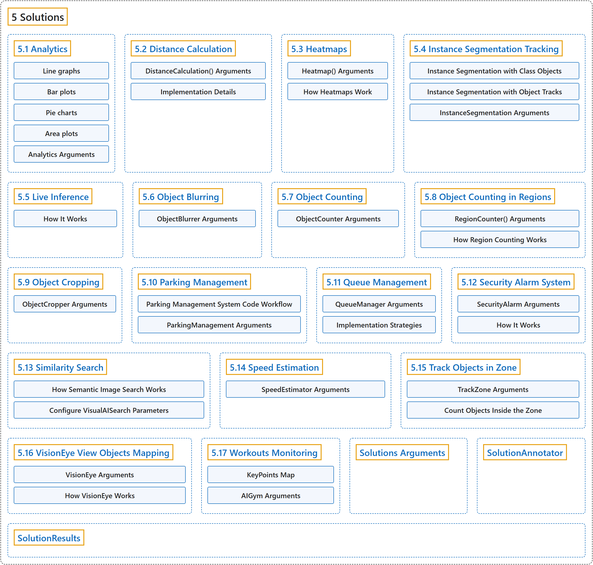

5. Solutions
Classification

Glossary
| Term | Definition | 中文翻译 | Source |
|---|---|---|---|
| 5 Solutions 解决方案 |
"Ultralytics Solutions provide cutting-edge applications of YOLO models, offering real-world solutions like object counting, blurring, and security systems, enhancing efficiency and accuracy in diverse industries." | Ultralytics Solutions 提供 YOLO 模型的前沿应用，给出目标计数、模糊处理、安防系统等真实场景的解决方案，在各行各业提升效率和准确率。 | Ultralytics, n.d.-p, "Ultralytics Solutions: Harness YOLO26 to Solve Real-World Problems", para. 1 |
| 5.1 Analytics 分析 |
"Analytics with Ultralytics YOLO26 turns object detection and tracking results into real-time charts, so you can watch how object counts change across a video frame by frame." | Ultralytics YOLO26 的分析功能把目标检测和跟踪结果转换成实时图表，让你逐帧观察视频中物体数量的变化。 | Ultralytics, n.d.-a, "Analytics using Ultralytics YOLO26", para. 1 |
| 5.2 Distance Calculation 距离计算 |
"Distance calculation is the process of measuring the space between two detected objects within an image or video frame." | 距离计算是测量图像或视频帧中两个被检测物体之间距离的过程。 | Ultralytics, n.d.-c, "Distance Calculation using Ultralytics YOLO26", para. 1 |
| 5.3 Heatmaps 热力图 |
"The Heatmap solution in Ultralytics YOLO26 tracks objects across video frames and overlays their accumulated movement intensity onto each frame, so busy areas glow in warm colors while quiet areas stay cool." | Ultralytics YOLO26 的热力图方案在各视频帧中跟踪物体，并把它们累积的运动强度叠加到每一帧上，繁忙区域显示暖色，安静区域保持冷色。 | Ultralytics, n.d.-k, "Object Tracking Heatmaps with Ultralytics YOLO26", para. 1 |
| 5.4 Instance Segmentation Tracking 实例分割跟踪 |
(context) "Instance segmentation is a computer vision task that involves identifying and outlining individual objects in an image at the pixel level." | （语境）实例分割是一项在像素级别识别并勾勒图像中各个物体的计算机视觉任务。 | Ultralytics, n.d.-e, "Instance Segmentation and Tracking using Ultralytics YOLO26", para. 1 |
| 5.5 Live Inference 实时推理 |
(context) "Combining this with Ultralytics YOLO26 allows for real-time object detection and analysis directly in your browser." | （语境）把它与 Ultralytics YOLO26 结合，就能直接在浏览器中进行实时目标检测和分析。 | Ultralytics, n.d.-f, "Live Inference with Streamlit Application using Ultralytics YOLO26", para. 1 |
| 5.6 Object Blurring 物体模糊 |
"Object blurring with Ultralytics YOLO26 involves applying a blurring effect to specific detected objects in an image or video." | Ultralytics YOLO26 的物体模糊是对图像或视频中特定的被检测物体施加模糊效果。 | Ultralytics, n.d.-g, "Object Blurring using Ultralytics YOLO26", para. 1 |
| 5.7 Object Counting 物体计数 |
"Object counting with Ultralytics YOLO26 involves accurate identification and counting of specific objects in videos and camera streams." | Ultralytics YOLO26 的物体计数是在视频和摄像头流中准确识别并计数特定物体。 | Ultralytics, n.d.-i, "Object Counting using Ultralytics YOLO26", para. 1 |
| 5.8 Object Counting in Regions 区域内物体计数 |
"The RegionCounter solution in Ultralytics YOLO26 tracks objects across video frames and, on every frame, counts the objects whose bounding-box center falls inside each region you define." | Ultralytics YOLO26 的 RegionCounter 方案在各视频帧中跟踪物体，并在每一帧统计边界框中心落在你定义的各个区域内的物体数量。 | Ultralytics, n.d.-h, "Object Counting in Regions with Ultralytics YOLO26", para. 1 |
| 5.9 Object Cropping 物体裁剪 |
"Object cropping with Ultralytics YOLO26 involves isolating and extracting specific detected objects from an image or video." | Ultralytics YOLO26 的物体裁剪是从图像或视频中分离并提取特定的被检测物体。 | Ultralytics, n.d.-j, "Object Cropping using Ultralytics YOLO26", para. 1 |
| 5.10 Parking Management 停车管理 |
"A parking management system built with Ultralytics YOLO26 detects vehicles in real time to track which parking spaces are occupied or available, then reports live lot occupancy." | 用 Ultralytics YOLO26 构建的停车管理系统实时检测车辆，跟踪哪些车位被占用、哪些空闲，并报告停车场的实时占用情况。 | Ultralytics, n.d.-b, "Build a Parking Management System with Ultralytics YOLO26", para. 1 |
| 5.11 Queue Management 排队管理 |
"Queue management using Ultralytics YOLO26 involves organizing and controlling lines of people or vehicles to reduce wait times and enhance efficiency." | 用 Ultralytics YOLO26 进行排队管理，是组织和控制人或车辆的队列，以减少等待时间、提高效率。 | Ultralytics, n.d.-l, "Queue Management using Ultralytics YOLO26", para. 1 |
| 5.12 Security Alarm System 安防报警系统 |
"The Security Alarm System Project utilizing Ultralytics YOLO26 integrates advanced computer vision capabilities to enhance security measures." | 基于 Ultralytics YOLO26 的安防报警系统项目集成了先进的计算机视觉能力，以加强安防措施。 | Ultralytics, n.d.-m, "Security Alarm System Project Using Ultralytics YOLO26", para. 1 |
| 5.13 Similarity Search 相似度搜索 |
(context) "This guide walks you through building a semantic image search engine using OpenAI CLIP and Flask." | （语境）本指南带你用 OpenAI CLIP 和 Flask 构建一个语义图像搜索引擎。 | Ultralytics, n.d.-d, "How to Build Semantic Image Search with OpenAI CLIP", para. 1 |
| 5.14 Speed Estimation 速度估计 |
"Speed estimation is the process of calculating the rate of movement of an object within a given context, often employed in computer vision applications." | 速度估计是计算物体在给定情境中运动速率的过程，常用于计算机视觉应用。 | Ultralytics, n.d.-n, "Speed Estimation using Ultralytics YOLO26", para. 1 |
| 5.15 Track Objects in Zone 区域内物体跟踪 |
"TrackZone specializes in monitoring objects within designated areas of a frame instead of the whole frame." | TrackZone 专门监控画面中指定区域内的物体，而不是整个画面。 | Ultralytics, n.d.-o, "TrackZone using Ultralytics YOLO26", para. 1 |
| 5.16 VisionEye View Objects Mapping VisionEye 视角物体映射 |
"Ultralytics YOLO26 VisionEye offers the capability for computers to identify and pinpoint objects, simulating the observational precision of the human eye." | Ultralytics YOLO26 VisionEye 让计算机能够识别并精确定位物体，模拟人眼观察的精确度。 | Ultralytics, n.d.-q, "VisionEye View Object Mapping using Ultralytics YOLO26", para. 1 |
| 5.17 Workouts Monitoring 健身监测 |
"Monitoring workouts through pose estimation with Ultralytics YOLO26 enhances exercise assessment by accurately tracking key body landmarks and joints in real-time." | 用 Ultralytics YOLO26 的姿态估计监测健身，通过实时准确跟踪身体关键部位和关节来改进运动评估。 | Ultralytics, n.d.-r, "Workouts Monitoring using Ultralytics YOLO26", para. 1 |
| Solutions Arguments 解决方案参数 |
(No definition) | （无定义） | Ultralytics, n.d.-p, "Solutions Arguments" |
| SolutionAnnotator SolutionAnnotator（解决方案标注器） |
"All Ultralytics Solutions use the separate class SolutionAnnotator, that extends the main Annotator class" | 所有 Ultralytics 解决方案都使用单独的 SolutionAnnotator 类，它扩展了主 Annotator 类 | Ultralytics, n.d.-p, "Usage of SolutionAnnotator", para. 1 |
| SolutionResults SolutionResults（解决方案结果） |
(context) "Except Similarity Search, each Solution call returns a SolutionResults object." |
（语境）除相似性搜索外，每次调用解决方案都会返回一个 SolutionResults 对象。 |
Ultralytics, n.d.-p, "Working with SolutionResults", para. 1 |
References
Ultralytics. (n.d.-a). Analytics using Ultralytics YOLO26. Ultralytics YOLO Docs (ultralytics 8.4.194). Retrieved October 31, 2026, from https://docs.ultralytics.com/guides/analytics/
Ultralytics. (n.d.-b). Build a Parking Management System with Ultralytics YOLO26. Ultralytics YOLO Docs (ultralytics 8.4.194). Retrieved October 31, 2026, from https://docs.ultralytics.com/guides/parking-management/
Ultralytics. (n.d.-c). Distance Calculation using Ultralytics YOLO26. Ultralytics YOLO Docs (ultralytics 8.4.194). Retrieved October 31, 2026, from https://docs.ultralytics.com/guides/distance-calculation/
Ultralytics. (n.d.-d). How to Build Semantic Image Search with OpenAI CLIP. Ultralytics YOLO Docs (ultralytics 8.4.194). Retrieved October 31, 2026, from https://docs.ultralytics.com/guides/similarity-search/
Ultralytics. (n.d.-e). Instance Segmentation and Tracking using Ultralytics YOLO26. Ultralytics YOLO Docs (ultralytics 8.4.194). Retrieved October 31, 2026, from https://docs.ultralytics.com/guides/instance-segmentation-and-tracking/
Ultralytics. (n.d.-f). Live Inference with Streamlit Application using Ultralytics YOLO26. Ultralytics YOLO Docs (ultralytics 8.4.194). Retrieved October 31, 2026, from https://docs.ultralytics.com/guides/streamlit-live-inference/
Ultralytics. (n.d.-g). Object Blurring using Ultralytics YOLO26. Ultralytics YOLO Docs (ultralytics 8.4.194). Retrieved October 31, 2026, from https://docs.ultralytics.com/guides/object-blurring/
Ultralytics. (n.d.-h). Object Counting in Regions with Ultralytics YOLO26. Ultralytics YOLO Docs (ultralytics 8.4.194). Retrieved October 31, 2026, from https://docs.ultralytics.com/guides/region-counting/
Ultralytics. (n.d.-i). Object Counting using Ultralytics YOLO26. Ultralytics YOLO Docs (ultralytics 8.4.194). Retrieved October 31, 2026, from https://docs.ultralytics.com/guides/object-counting/
Ultralytics. (n.d.-j). Object Cropping using Ultralytics YOLO26. Ultralytics YOLO Docs (ultralytics 8.4.194). Retrieved October 31, 2026, from https://docs.ultralytics.com/guides/object-cropping/
Ultralytics. (n.d.-k). Object Tracking Heatmaps with Ultralytics YOLO26. Ultralytics YOLO Docs (ultralytics 8.4.194). Retrieved October 31, 2026, from https://docs.ultralytics.com/guides/heatmaps/
Ultralytics. (n.d.-l). Queue Management using Ultralytics YOLO26. Ultralytics YOLO Docs (ultralytics 8.4.194). Retrieved October 31, 2026, from https://docs.ultralytics.com/guides/queue-management/
Ultralytics. (n.d.-m). Security Alarm System Project Using Ultralytics YOLO26. Ultralytics YOLO Docs (ultralytics 8.4.194). Retrieved October 31, 2026, from https://docs.ultralytics.com/guides/security-alarm-system/
Ultralytics. (n.d.-n). Speed Estimation using Ultralytics YOLO26. Ultralytics YOLO Docs (ultralytics 8.4.194). Retrieved October 31, 2026, from https://docs.ultralytics.com/guides/speed-estimation/
Ultralytics. (n.d.-o). TrackZone using Ultralytics YOLO26. Ultralytics YOLO Docs (ultralytics 8.4.194). Retrieved October 31, 2026, from https://docs.ultralytics.com/guides/trackzone/
Ultralytics. (n.d.-p). Ultralytics Solutions: Harness YOLO26 to Solve Real-World Problems. Ultralytics YOLO Docs (ultralytics 8.4.194). Retrieved October 31, 2026, from https://docs.ultralytics.com/solutions/
Ultralytics. (n.d.-q). VisionEye View Object Mapping using Ultralytics YOLO26. Ultralytics YOLO Docs (ultralytics 8.4.194). Retrieved October 31, 2026, from https://docs.ultralytics.com/guides/vision-eye/
Ultralytics. (n.d.-r). Workouts Monitoring using Ultralytics YOLO26. Ultralytics YOLO Docs (ultralytics 8.4.194). Retrieved October 31, 2026, from https://docs.ultralytics.com/guides/workouts-monitoring/